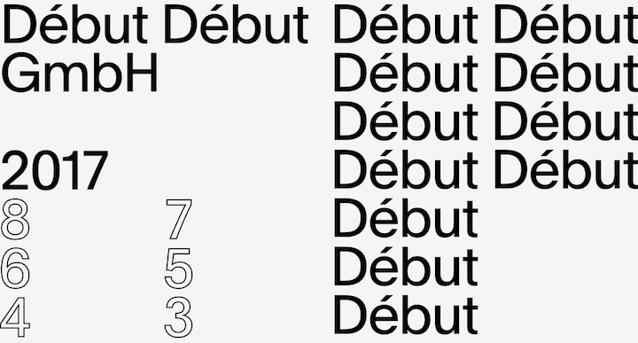

Website Comparison
A Successful Website
Spassky Fischer

I find this website to be effective for a few reasons. First, it encourages exploration on a dynamic level. As a user, you're thrown into a world that is unique, but maybe a bit confusing. As a graphic design studio, their work is immediately intriguing. The large pictures make it easy to grasp what they do and their unique aesthetic without the need for any type of "info" or "about" page. This would appeal to Nielson’s point regarding learnability. As a user trying to find out what this design firm does, it is easy to gather. This is not by that the site says necessarily, it is by what the site shows.
Another reason I find this website unique is its use of interaction. Without making any motions with the cursor, the vertical gallery shift to allow you to see more. It seems as though it is allowing you to explore even before you wish to. In addition, when an image is clicked it allows the user to see more detail about that project and get a good look at how it was used. This is a great example of efficiency, showing the user what they want and displaying it is a unique manner.
In regards to memorability, this site is also particularly interesting. I think is this particularly evident in the double scrolling feature, that something that is not often seen in portfolio sites. I keep going back to it because I find their work to be fascinating and their method of showing the work to also be unique and engaging. I can return to the site and find the same information that I found before and it is still easy to navigate.
There are a few errors to be made in this site. Sometimes the double scrolling effect can be slightly confusing, though I think in the end it is easily learned. In addition, in the “about” section, the references are impossible to read because they are off the readable page. That is a downside, but something that did not bother me in the first interaction. Other than these notes, the site is fairly fluid and has successful navigation.
I find Nielson’s final point to ring true in this design. It is a satisfying site. That is why I continue to go back to it and Spassky Fischer for inspiration. In some ways, I think I lean towards this point more that others. I find that if I find the aesthetic of a site (including the layout and type) to be satisfying, I will like the site as a whole even if it has some technical issues.
An Unsuccessful Website
Debut Debut

There are so many facets of this site that I actually enjoy very much, but I have to say that in regards to usability, it struggles in some areas. First, learnability is a lacking factor. This is based upon the fact that the interaction has problems. As a graphic agency, their work is actually hard to find. This is because the links on the side (the numbers) are actually links to further investigate their material. This is not an obvious action for the user, and for that reason I would consider it hard to manage.
The point mentioned earlier is also an issue with the efficiency of the site. The navigation makes it so that it can be so difficult to find anything, especially a specific project that is in the site itself. Another issue that I could have is that the cursor changes to a large circle when the user tries to hit a link. This could be a neat feature in theory, but in practice it is cumbersome. It happens to be so large that the user cannot actually even find what link it is pointing to. In addition, the cursor blinks like there is some kind of issue with the code involved.
Memorability is an attribute that this site does not necessarily fail at in my mind. The aesthetic and work of the company itself is easy to recognize again. In addition, once I figured out the navigation it was much easier to use.
The errors that I mentioned above where the biggest issues in usability. Some were technical, but most of the issues I have are actually with the design itself and how cumbersome it can be to actually go around the site to find what you want. It also does not encourage exploration in this way.
All of this to say, I do not think this site is completely unsuccessful. The type and layout is actually quite nice. I also like the outlined type feature, I would love to replicate that later. The repeated name is a trendy example of a landing page that is aesthetically pleasing as well. In all, this site is not irreparably hard to use or difficult, it just needs some more thinking through in regards to navigation and overall usability.